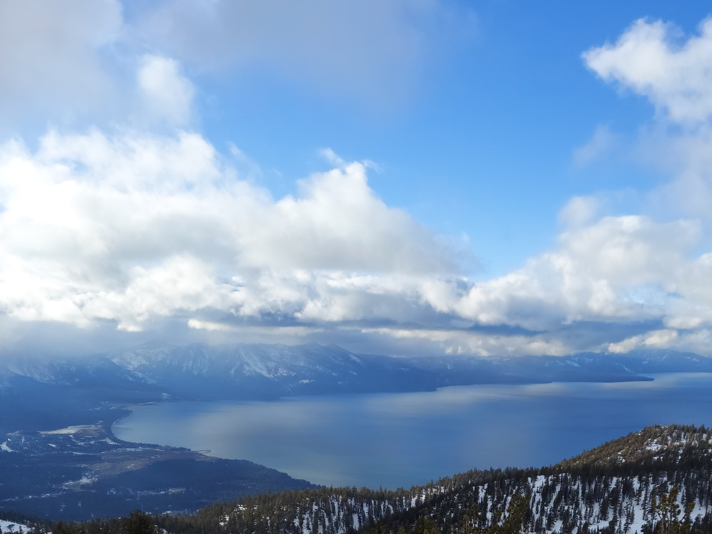
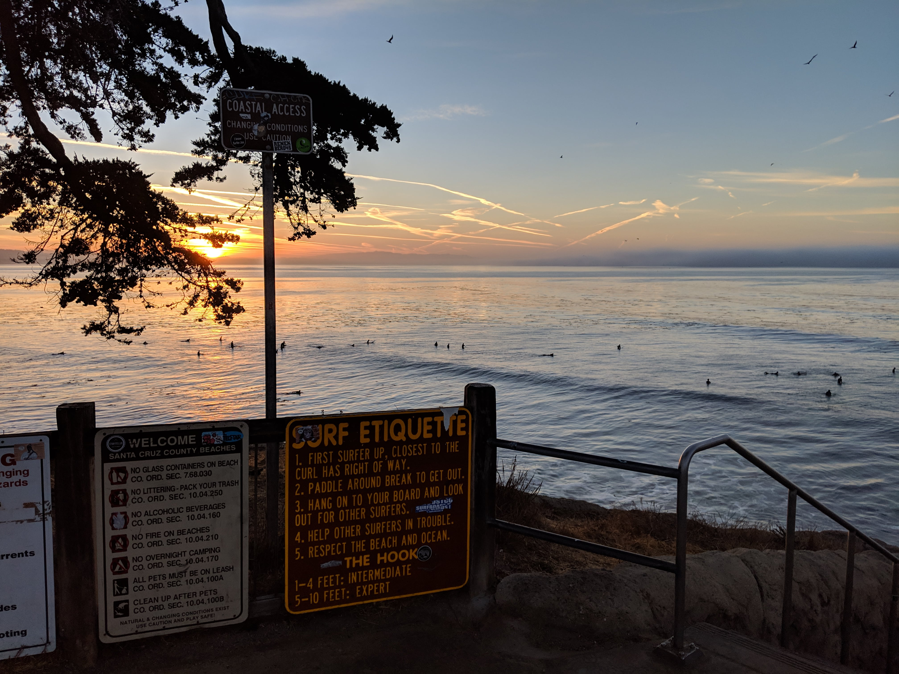
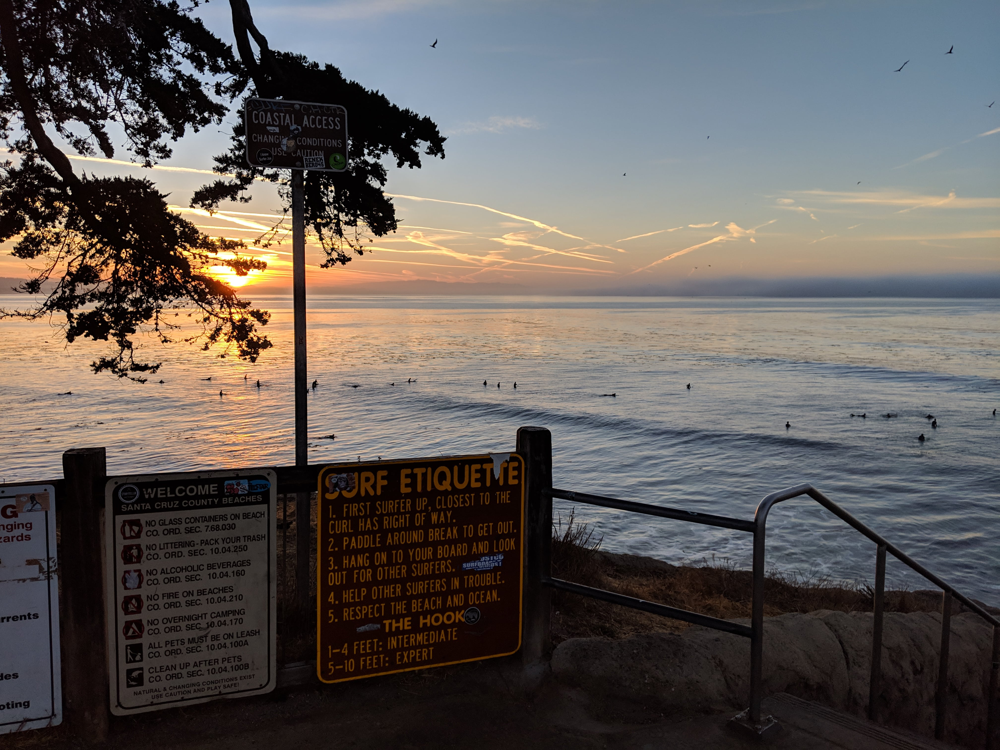
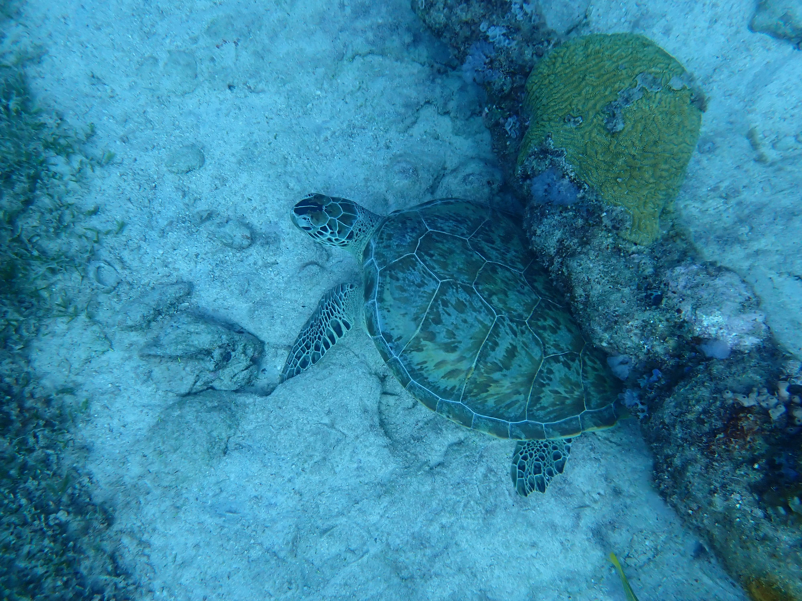
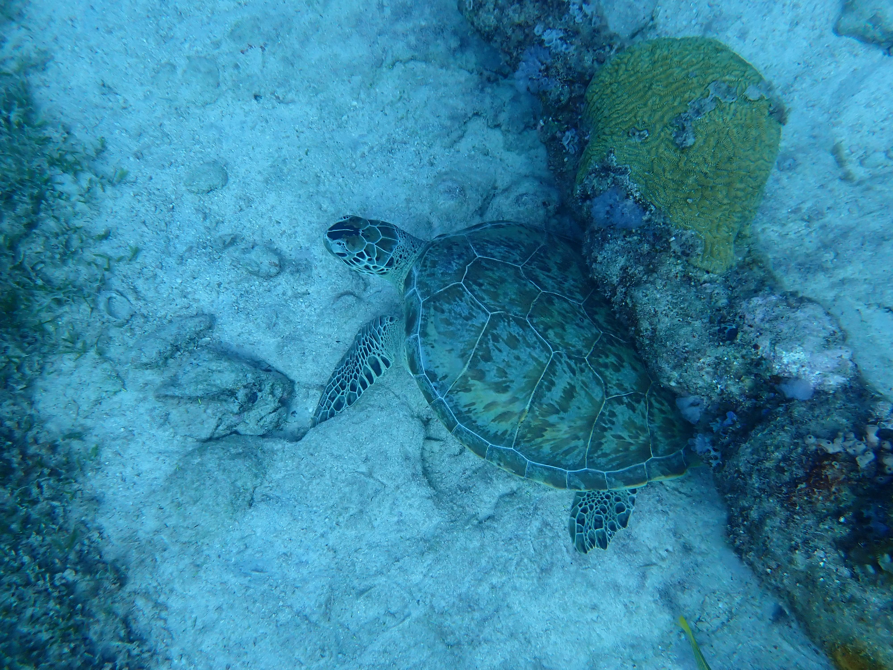
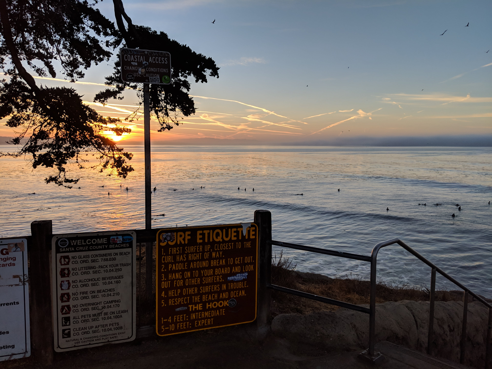
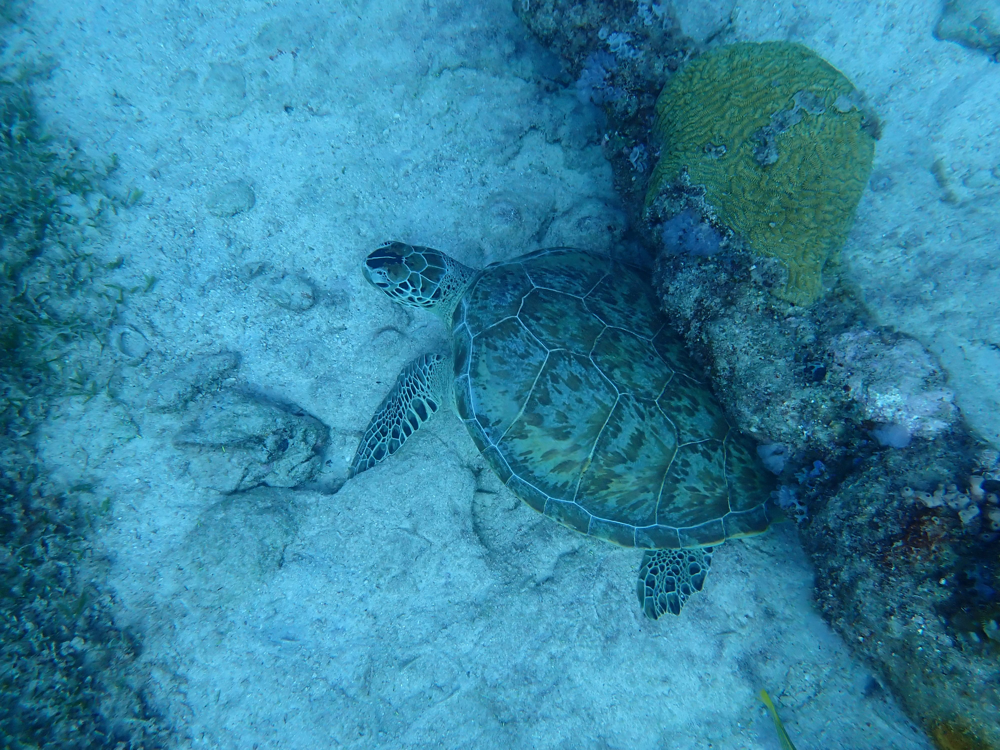

Photo Gallery


 

 



Various photos taken on some of my favortie trips this year.
“Travel isn’t always pretty. It isn’t always comfortable. Sometimes it hurts, it even breaks your heart. But that’s okay. The journey changes you; it should change you. It leaves marks on your memory, on your consciousness, on your heart, and on your body. You take something with you. Hopefully, you leave something good behind.”
– Anthony Bourdain